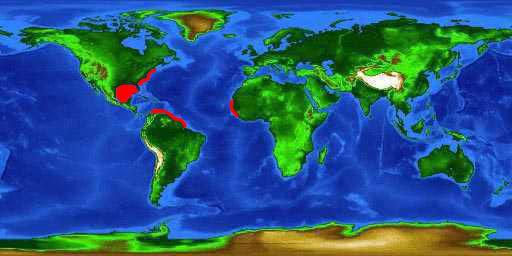
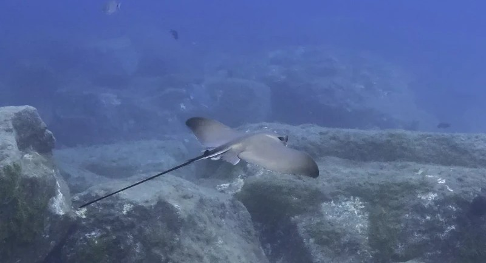

Description
The cownose ray is a cartilaginous fish belonging to the family Rhinopteridae and the larger group of eagle rays. It is named for the distinctive shape of its head, whose front edge resembles the broad muzzle of a cow. Its body is flattened into broad, wing-like pectoral fins that allow it to “fly” through the water.[1][2]
Cownose rays are primarily found in the western Atlantic Ocean, ranging from the eastern coast of the United States through the Gulf of Mexico and southward into parts of South America. They commonly inhabit coastal waters, bays, estuaries, and continental-shelf environments.[1][3]
Unlike many rays that spend most of their time close to the seafloor, cownose rays are capable of swimming throughout the water column and are often seen near the surface. They are particularly famous for forming enormous schools that can contain hundreds or thousands of individuals.[2][3]
Global Demographics & Habitat

